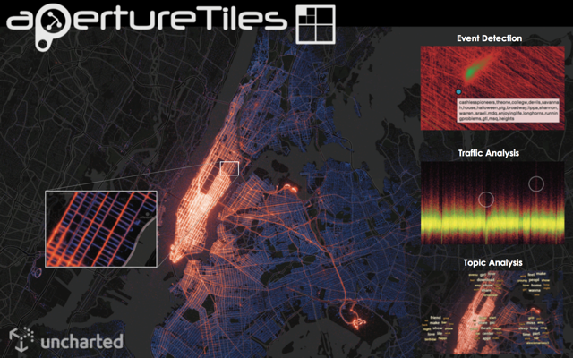
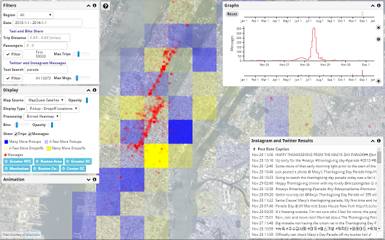
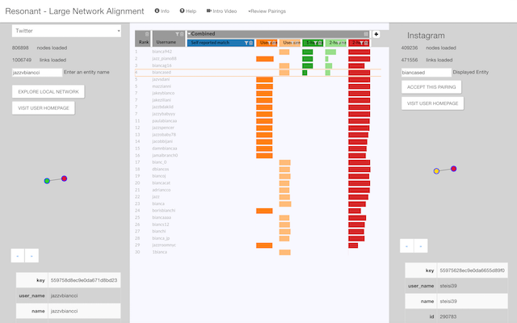
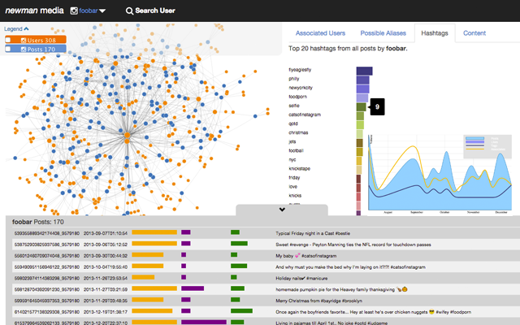
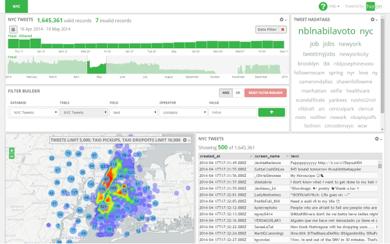
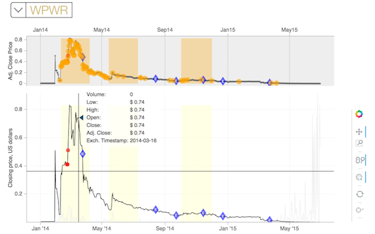
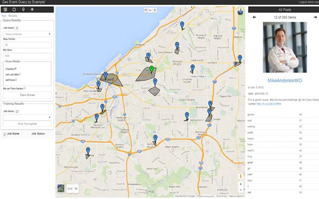

Aperture Tiles
TeamUncharted
ProblemChallenge 1
ContactScott Langevin - slangevin@uncharted.software
Discovery of patterns and anomalies in space and time through map-style navigation of billions of data points in any modern web browser. Tile-Based Visual Analytics (TBVA) enables high-fidelity analysis of big data at massive scales, revealing phenomena that would otherwise be lost through sampling or coarse aggregation. Using techniques similar to online geographic map services, tailored analytic results are served at each zoom level. Unlike raster tile systems, TBVA enables interactive analysis by binning data rather than graphics.
Combining correlated social media, traffic and weather layers with computational analytics including Event Detection, Traffic Analysis, and Topic Analysis provides insight into population movement and activity on global to local scales. Cluster computing is used to produce the resulting tile-based visual analytics, which enable monitoring of trends over time and discovery of unusual geotemporal events.
Event Detection - Stanford XGRAPHS
Events of potential interest are discovered computationally using geotemporal anomaly detection and event modeling. By marking spikes and lulls in activity in space and time, analytic event detection complements visual methods by further enabling rapid discovery. Conversely, visualization complements analytic results by fully expressing anomalies in context. A luminance ordered color spectrum is used to maximize perception.
Traffic Analysis - IBM Research
Anomalies in regular day-to-day patterns of population movement are revealed by plotting the results of traffic modeling. Weather and social media layers can be superimposed on the same time scale to investigate possible correlations with events such as storms and street closures.
Topic Analysis - Georgia Tech
Tile-based topic modeling and summarization forms a view of the landscape of social media chatter at multiple levels of detail. Global and local trends point to unfolding events on the ground. When superimposed with movement trends topic analysis can reveal correlations between tweets and traffic, forming a more detailed portrait of local life.

Minerva
TeamKitware
ProblemChallenge 1
ContactDavid Manthey - kitware.com
Geolocated big data holds promise for advancing city planning, commerce, and law enforcement. Many existing web mapping systems limit direct client interaction, instead relying on extensive preprocessing to present an aggregated view of large geolocated data. This impedes the interactive manipulation of individual data items and makes the handling of streaming data difficult.
Minerva Taxi is an open-source web application built for analysts, enabling the ability to rapidly query, filter, view, and analyze large quantities of data. The application uses GeoJS to scalably display millions of data points, while also incorporating multiple view layers, including binned heatmaps showing relative data concentration and deviation from expected statistics, and vector displays showing flow of data over time. When data sizes exceeds local limits, the application automatically begins to randomly sample the data presented. Since the large set of queried data is made available to the web client, interactive filtering, brushing, animation, and re-binning is possible, which would normally require serverside processing.

Resonant Network Alignment
TeamKitware
ProblemChallenge 2
ContactCurtis Lisle - curtislisle@knowledgevis.com
Resonant Network Alignment is an interactive application that focuses on discovering the complete identity of individuals in very large social network graphs. The online presence of an individual through their posts, friends network, and user names, are reviewed using comparative metrics and a state-of-the-art interactive display. Designed to assist today’s analyst, Resonant Network Alignment presents an easy-to-learn interface that lets the analyst take control of the search for matching entities across multiple social networks.
Resonant Network Alignment implements a simple workflow, where analysts are able to explore subregions of separate social networks simultaneously, observing and exploring metrics over connected communities of individuals. Through its innovative, interactive web interface developed at Harvard’s Visual Computing Group and its social database management technology created by Kitware, Inc. and KnowledgeVis, LLC, Resonant Network Alignment can help social network students and analysts anywhere uncover communities and explore the online identities of individuals embedded in these communities.

Newman
TeamSotera
ProblemChallenge 2
ContactKathleen Lossau - Kathleen.Lossau@soteradefense.com
Newman is a web-based application tool that provides the ability to quickly analyze and explore email using advanced analytics and visualization techniques. These abilities are not possible with traditional email applications.
The visualizations help identify trends, patterns, and relationships between entities that may not otherwise be obvious. Visualizations include communication network graphs, email table, email viewer, rank, entity, and topics histograms.

Neon
TeamNext Century
ProblemChallenge 1
ContactHTML5, CSS3, JavaScript
We need to give each other the space to grow, to be ourselves, to exercise our diversity. We need to give each other space so that we may both give and receive such beautiful things as ideas, openness, dignity, joy, healing, and inclusion.
Header
We need to give each other the space to grow, to be ourselves, to exercise our diversity. We need to give each other space so that we may both give and receive such beautiful things as ideas, openness, dignity, joy, healing, and inclusion.

FEAT, Financial Event Analysis Tool
TeamContinuum Analytics
ProblemChallenge 3
ContactHunt Sparra
The Financial Event Analysis Tool (FEAT) aids analysts in constructing timeline analyses of financial market events that have been correlated with external market-manipulating factors such as SPAM emails, social media discussions, and news releases using a familiar market activity and event dashboard. FEAT provides analyses across a wide variety of data time scales and across a range of external factors, allowing for example, an analyst to contextualize and aggregate individual quotes, transactions, and market-manipulating factors over timelines ranging from days to months. In addition, FEAT provides a testbed for financial anomaly detection algorithms and an integration platform for initiating and querying targeted crawls of external market factors.
Stanford University
Unsupervised annotation of temporal regions of financial activity correlated with pump-and-dump market manipulations.

GEQE
TeamSotera
ProblemChallenge 1
ContactJoseph Gartner - joseph.gartner@soteradefense.com
Geo Query By Example is a tool aimed at finding desired places (e.g. hospitals, airports) and events (e.g. marathons, protests), by leveraging geo-tagged social media data. The tool features an easy to use web based front end, and leverages machine learning models to find locations and events of interest. Once areas have been identified, stored data from the place and time can be explored and searched, giving the user great forensic ability as well.
-
-
-
Resonant Network Alignment
Kitware
-
-
-
-